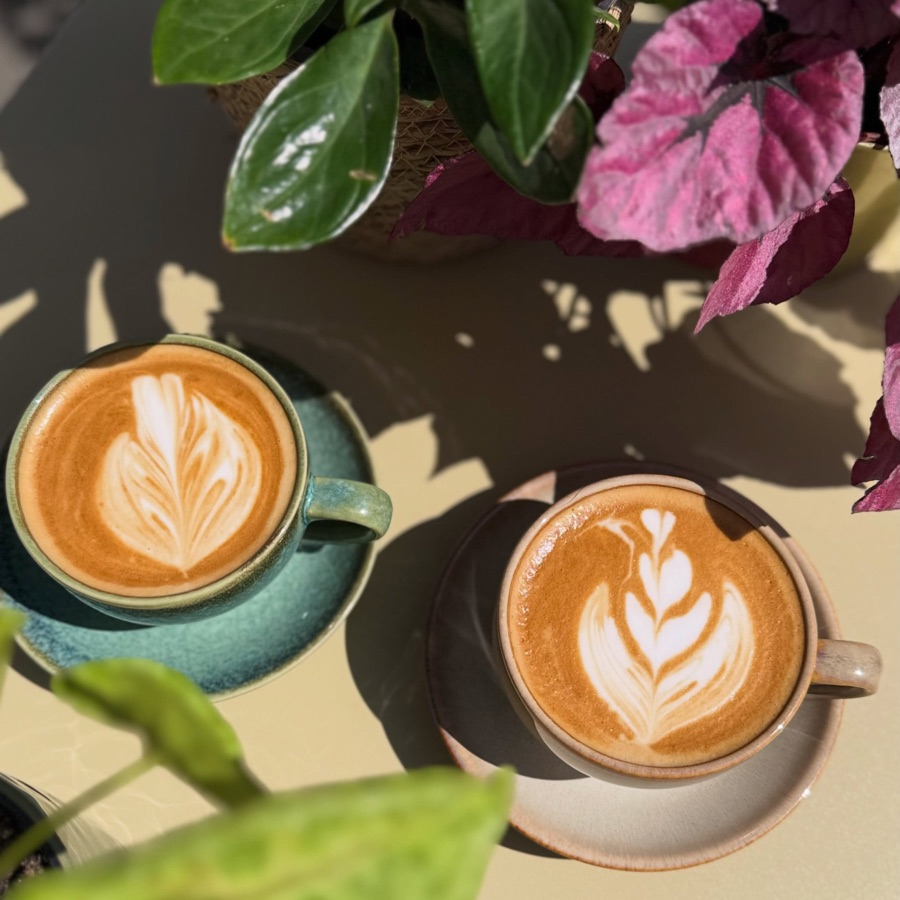
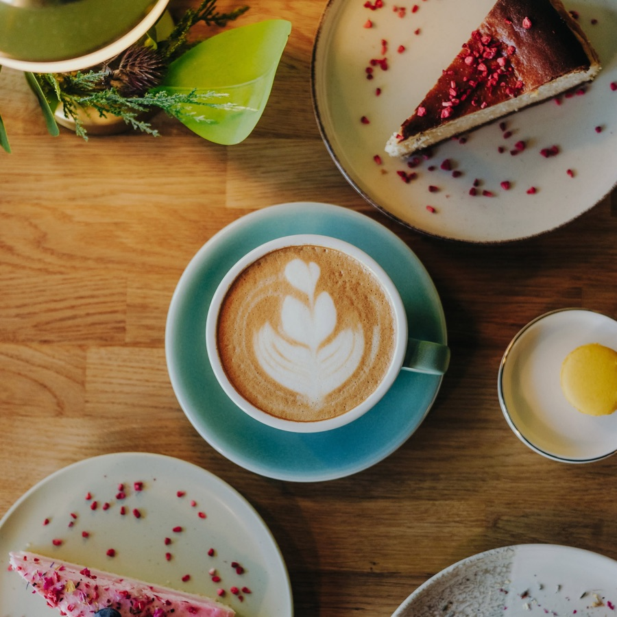
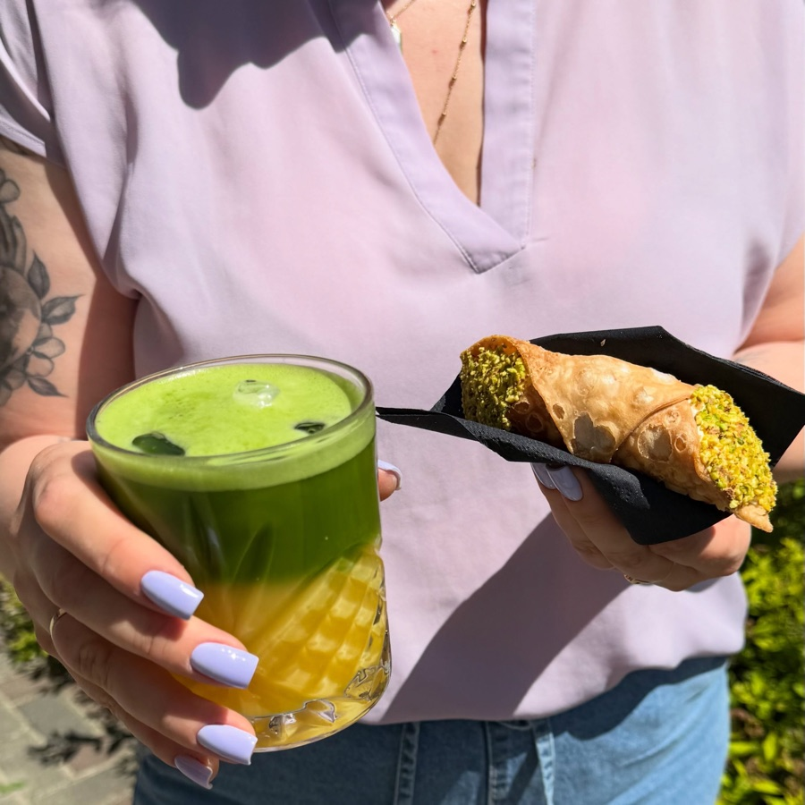
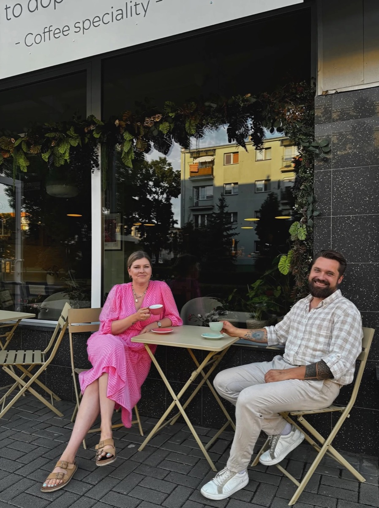
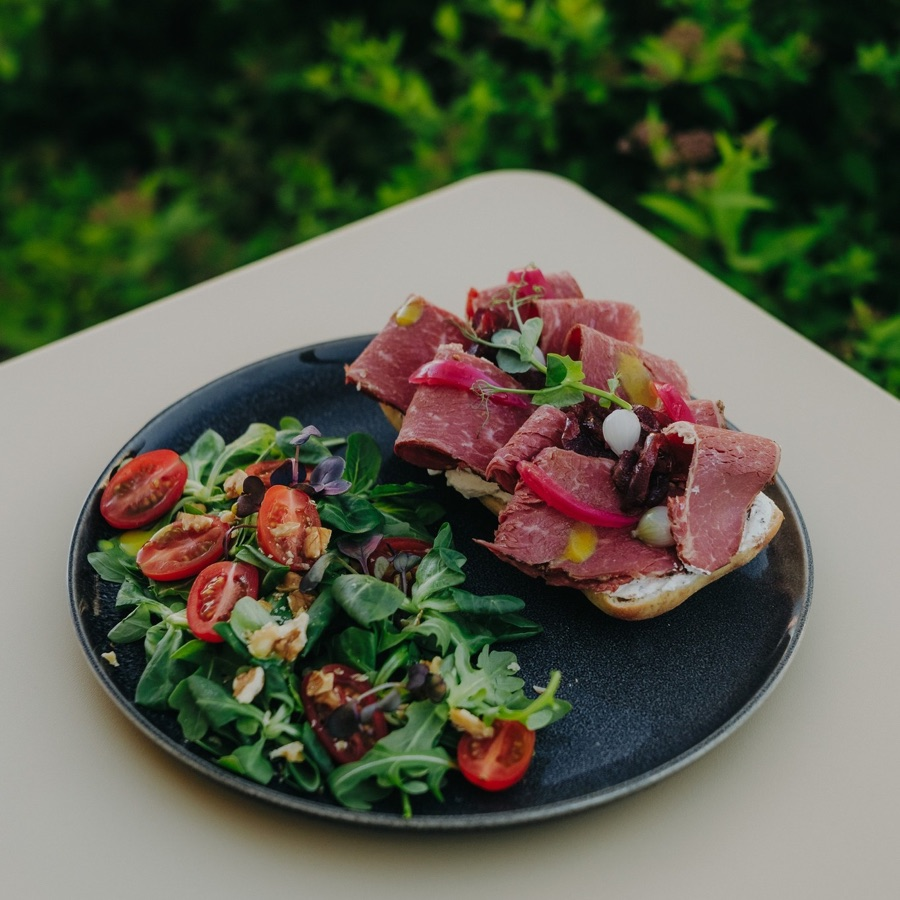
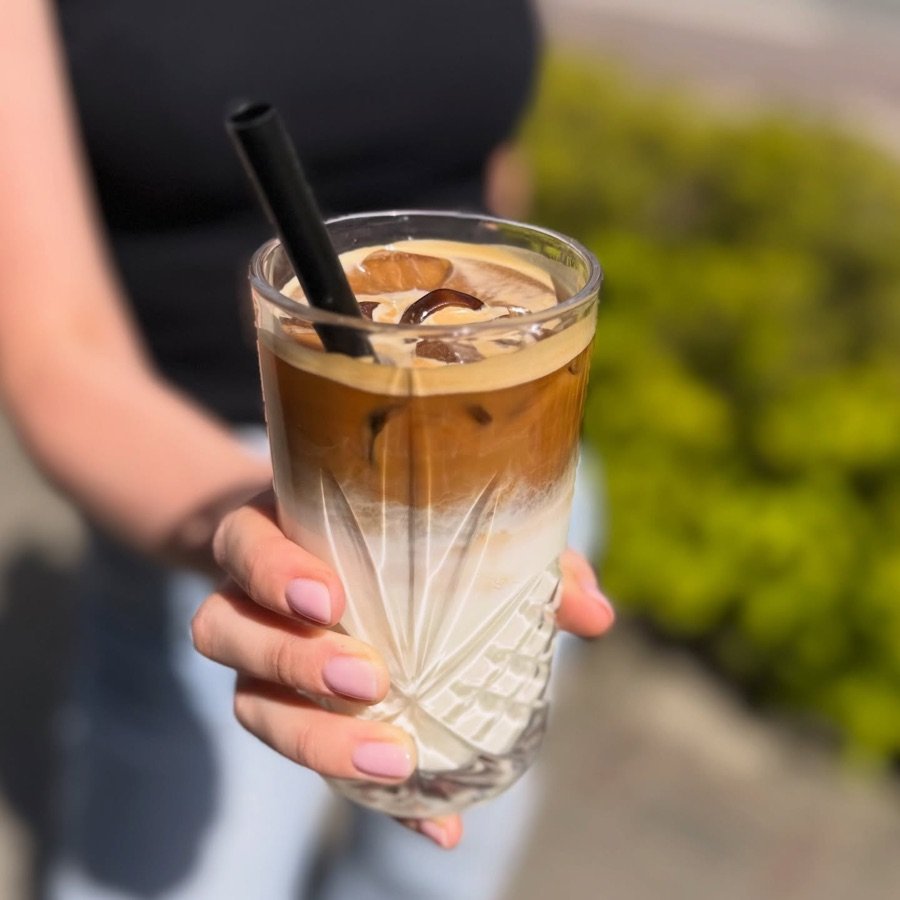

Opinie
Na Facebooku poleca nas 100% recenzentów. Poniżej fragmenty tego, co goście napisali sami.
„Ale perełka na mapie Tarnobrzegu. Tu wszystko ma sens!"
„Pyszne śniadania, wyborne ciasta i świetna kawa."
„Obydwie kawy sztos! Zero posmaku chemii, czysta przyjemność."
„Przytulne miejsce na kawę speciality i śniadanie. Espresso tonic idealne."
„Pierwszego dnia jedliśmy pyszne kanapki, które zachęciły nas, żeby wrócić kolejnego dnia."
„Nie byłam tam tylko jeden raz — staram się bywać regularnie."
„Do wyboru alternatywne metody parzenia: drip v60, chemex."
„Odskocznia od klasycznej kawy."
Opinie
„Ale perełka na mapie Tarnobrzegu — tu wszystko ma sens! Pierwszego dnia jedliśmy pyszne kanapki, które zachęciły nas, żeby wrócić kolejnego dnia."
„Zostawiam maksymalne oceny za wszystkie aspekty. Pyszne śniadania, wyborne ciasta i świetna kawa."
„Caffè latte malinowe i słony karmel — obydwie kawy sztos. Zero posmaku chemii, odskocznia od klasycznej kawy."
„Bardzo fajne, przytulne miejsce na kawę speciality i śniadanie. Do wyboru drip v60 i chemex. Espresso tonic idealne."
Opinie
„Ale perełka na mapie Tarnobrzegu — tu wszystko ma sens!"
Anna K. · Google„Pyszne śniadania, wyborne ciasta i świetna kawa. Staram się bywać regularnie."
Claudia K. · lokalny przewodnik Google„Obydwie kawy sztos! Zero posmaku chemii, czysta przyjemność i odskocznia od klasycznej kawy."
Marek D. · lokalny przewodnik Google„Przytulne miejsce na kawę speciality i śniadanie. Espresso tonic idealne."
Opinia w Google4,9 ★ z 220 opinii · 100% poleca na Facebooku
Opinie
„Ale perełka na mapie Tarnobrzegu — tu wszystko ma sens!"
„Pierwszego dnia jedliśmy pyszne kanapki, które zachęciły nas, żeby wrócić kolejnego dnia. Sernik baskijski, hałka, matcha marakujowa."
„Zostawiam maksymalne oceny za wszystkie aspekty."
„Pyszne śniadania, wyborne ciasta i świetna kawa. Nie byłam tam tylko jeden raz — staram się bywać regularnie."
„Caffè latte malinowe i słony karmel — obydwie kawy sztos. Zero posmaku chemii."
„Do wyboru alternatywne metody parzenia: drip v60, chemex. Espresso tonic idealne."






4,9 na 5 w 220 opiniach Google, 100% poleceń na Facebooku. Za każdą oceną stoi kawa, śniadanie albo kawałek sernika.
Przeczytaj opinie